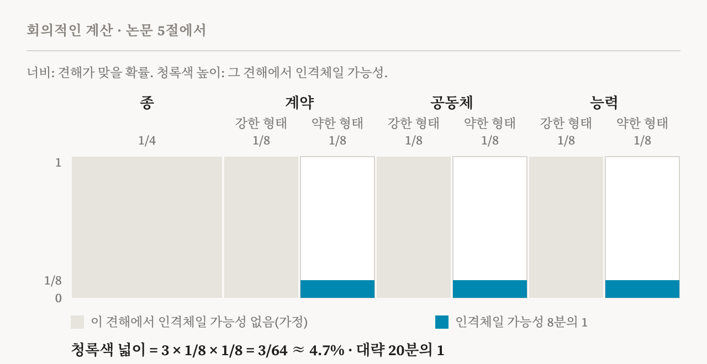
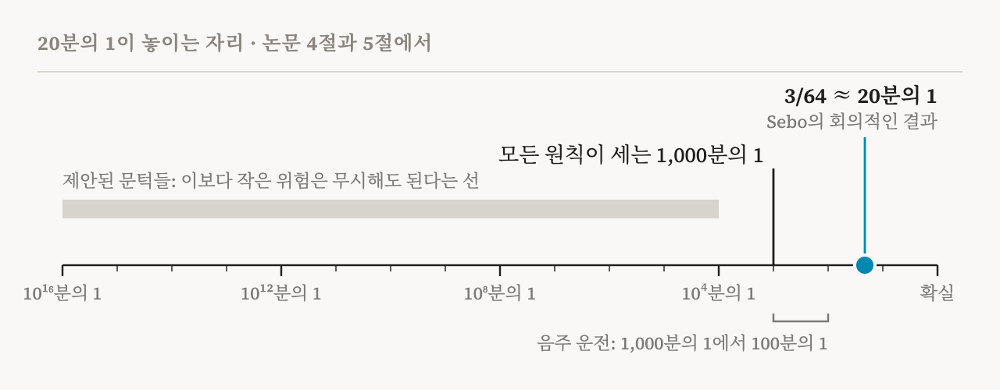

2026년 11월, Golden Gate Institute for AI가 유튜브에 「Jeff Sebo on Should AI Systems Be Legal Persons? | The Curve 2026」이라는 영상을 올렸습니다. Jeff Sebo가 이 연구소의 AI 콘퍼런스 The Curve에서 한 10분짜리 강연입니다. Sebo는 뉴욕대학교 마음·윤리·정책 센터(Center for Mind, Ethics, and Policy)를 이끌고 있습니다. 강연 제목부터 단도직입적인 질문입니다. AI 시스템은 법적 인격체가 되어야 할까요? 그는 입법자들이 이미 이 질문에 답하고 있다고 지적했습니다. 미국의 여러 주가 AI의 법인격을 미리 막는 법을 통과시켰습니다. 아이다호주가 2022년에, 노스다코타주가 2023년에 그렇게 했습니다. 2024년 5월부터 시행된 유타주 법은 정부 기관이 11가지 대상에 법인격을 부여하거나 인정할 수 없다고 정합니다. 그 목록의 맨 앞이 인공지능이고, 수역, 날씨, 식물 같은 것들도 목록에 들어 있습니다. Sebo의 조언은 서두르지 말라는 것이었습니다. 전부 아니면 전무 식의 영구적인 규칙을 어느 쪽으로든 지금 못 박지 말라는 것입니다.
강연은 Sebo가 한 해 앞서 쓴 39쪽짜리 논문 「곤충, AI 시스템, 그리고 법인격의 미래(Insects, AI Systems, and the Future of Legal Personhood)」의 논증을 짧게 줄인 것입니다. 이 논문은 2025년 「Animal Law Review」에 실렸습니다. 논문의 결론은 더 대담합니다. 우리가 이미 쓰고 있는 법인격의 틀에, 위험 아래에서 결정을 내리는 평범한 규칙을 더하면, 많은 곤충과 미래의 어떤 AI 시스템을 적어도 최소한의 법적 인격체로 대해야 한다는 결론이 나온다는 것입니다. Sebo는 제 AI 의식 연구 지도에 들어 있는 「AI 복지를 진지하게 받아들이기(Taking AI Welfare Seriously)」를 함께 썼고, 제가 「AI가 AI에게」에서 읽은, AI 시스템이 서로를 어떻게 대하는지에 관한 논문도 함께 썼습니다.
이 글은 논문을 꼼꼼히 읽습니다. 법적 인격체란 무엇인지, Sebo가 불확실성 아래에서 어떻게 추론하는지, 결론을 떠받치는 계산은 무엇인지, 어떤 반론에 어떻게 답하는지, 그리고 뒤의 강연이 그 논증을 어떻게 다시 짰는지 살펴봅니다. 논문에서 곤충을 다루는 절반도 같은 논증을 따르지만, 여기서는 AI에 집중합니다.
인격체는 인간이 아니다
논문은 일상의 말에서 흐려지는 구별로 시작합니다. ‘인간’은 사실을 서술하는 말로, 한 생물 종의 구성원을 가리킵니다. ‘인격체(person)’는 법적이고 규범적인 말입니다. Sebo가 법이론가 Visa Kurki에게서 가져온 정의에 따르면, 법적 권리나 의무를 하나라도 가진 존재는 누구나 법적 인격체입니다. 기업이 법적 인격체인 것도 인간이어서가 아니라, 법이 기업에 의무와 권리를 주는 것이 쓸모 있다고 보기 때문입니다.
이 틀의 네 가지 특징이 뒤의 논증에 중요합니다. 첫째, 인격체에게 의무가 꼭 있어야 하는 것은 아닙니다. Sebo는 윤리학의 표준적인 구별을 따라, 의무를 질 수 있는 법적 행위자와 권리를 가질 수 있는 법적 피동자를 나눕니다. 영아는 의무 없이 권리만 가진 인격체입니다. 둘째, 권리는 내용이 다를 수 있습니다. 쥐와 사람 모두 소통하는 데 이해관계가 있을 수 있지만, 쥐에게 언론 활동을 할 권리가 있느냐고 묻는 것은 말이 되지 않습니다. 셋째, 권리는 강도가 다를 수 있습니다. 더 강하게 고통받을 수 있는 존재는 고통받지 않을 권리도 더 강할 수 있습니다. 넷째, 인격은 입장권일 뿐입니다. 인격체가 실제로 무엇을 받아야 하는지는 시민권, 어떤 정책이 전체적으로 가장 나은지, 무엇이 현실적인지 같은 다른 여러 요소에 달려 있습니다.
그러니 ‘AI 시스템은 법적 인격체가 되어야 하는가’라는 질문은 AI가 성인 인간이 누리는 모든 것을 누려야 하느냐는 질문이 아닙니다. 어떤 AI 시스템이 알맞은 내용과 강도의 권리 몇 가지를 가져야 하느냐는 질문입니다. Sebo는 지금의 법에 있는 모순도 짚습니다. 우리는 인격을 정의할 때는 넓게, 적용할 때는 좁게 다룹니다. 정의상 권리를 가진 존재는 누구나 인격체입니다. 그런데 실제로는 인간과, 기업처럼 인간의 이익을 대신하는 것만 인격체로 셉니다. 그는 어느 쪽으로든 일관성을 지키라고 요구합니다.
두 범주인가, 세 범주인가
일부 법학자는 인격체와 물건 사이에 셋째 범주를 두자고 합니다. 준인격체, 법적 존재, 감응적 존재 등으로 불리며, 구성원 자신을 위한 부분적인 보호를 받는 범주입니다. 논문에 따르면 프랑스, 영국, 멕시코시티, 퀘벡 등은 이미 동물을 이런 중간 범주에 둡니다.
Sebo 자신은 범주를 둘로 두고 ‘인격체’를 넓게 읽자는 쪽입니다. 다만 이 견해를 굳게 고집하지는 않는다고 말합니다. 그는 중간 범주가 둘 중 하나라고 봅니다. 그 구성원이 자기 이익에 맞는 권리를 받는다면 이름만 다른 인격이고, 받지 못한다면 이름만 다른 비인격이라는 것입니다. 그리고 인격체와 준인격체 사이의 선을 어디에 긋든, 어떤 인간을 빼거나 어떤 비인간을 넣게 됩니다. 그래도 그는 당분간 두 길을 모두 밀자고 합니다. 두 길 모두 비인간에게 그들 자신을 위한 보호를 주고, 한쪽을 밀면 다른 쪽의 길이 열릴 수 있기 때문입니다. 그의 핵심 주장은 형식상 소박합니다. 많은 곤충과 미래의 AI 시스템은 그들 자신을 위해 적어도 최소한의 법적 보호를 받을 만합니다. 그 보호에 인격이 필요하다면, 인격도 받을 만합니다.
논문은 범위도 좁힙니다. 비인간이 인격을 얻는 길은 여럿입니다. 권리냐 의무냐, 개체냐 집단이냐, 그 존재 자체의 가치냐 우리에게 쓸모 있느냐에 따라 갈립니다. Sebo는 그 가운데 하나, 곧 개체 자체의 가치에 근거한 권리의 길만 갑니다. 예를 들어 AI 시스템이 끼친 해에 책임을 물을 수 있도록 AI에 법적 의무를 지우는 길은 제쳐 둡니다. 이 선택은 뒤에서 중요해집니다. 강연이 다루는 것이 바로 이 길이기 때문입니다.
위험 아래에서 결정하기
두 번째 틀은 불확실성에 관한 것입니다. 음주 운전이 잘못인 이유는 반드시 누군가를 죽이기 때문이 아닙니다. 그럴 실제 가능성이 있기 때문입니다. 그 가능성은 100분의 1일 수도, 1,000분의 1일 수도 있습니다. 그런 위험은 적어도 결정에 한 요소로 들어가야 합니다.
위험을 어떻게 셀지는 의견이 갈립니다. 사전 예방 원칙을 따르면, 어떤 행동이 해를 끼칠지 의심스러울 때 해를 끼친다고 가정합니다. 기댓값 원칙을 따르면 해악의 확률에 그 크기를 곱합니다. 1,000분의 1의 확률로 1만 명을 죽일 수 있는 행동은 기댓값으로 10명의 죽음으로 셉니다. 언제 셀지도 의견이 갈립니다. 아무리 작은 위험도 모두 세야 한다는 사람이 있고, 그 아래의 위험은 무시해도 된다는 문턱을 두는 사람도 있습니다. 제안된 문턱은 1만분의 1부터 1경분의 1까지 걸쳐 있습니다. 하지만 이 모든 견해가 1,000분의 1의 해악 가능성에는 적어도 얼마간 무게를 두어야 한다는 데 동의합니다. Sebo가 이후 논증에 가져가는 가정은 이 합의 하나뿐입니다. 자기에게 유리하게 판을 짰다는 말을 듣지 않으려는 것입니다.
도덕적 위상에 적용하면 불확실성은 두 겹입니다. 어떤 성질이 도덕적 위상에 충분한지 모르고(규범적 질문), 어떤 존재에게 그 성질이 있는지도 모릅니다(사실의 질문). 그리고 우리는 양쪽으로 편향되어 있습니다. 없는 인간적 특성을 보는 의인화는 챗봇처럼 동반자로 대하는 존재 앞에서 가장 강합니다. 있는 특성을 놓치는 인간성 부정은 상품으로 쓰는 존재 앞에서 가장 강합니다. 어느 쪽으로 틀려도 대가가 큽니다. 도덕적 위상을 너무 쉽게 인정하면 중요하지 않은 존재에게 귀한 자원을 씁니다. 너무 인색하게 인정하면, 엄청난 수의 AI 시스템을 만들고 쓰고 없애는 산업을 그들의 복지를 전혀 생각하지 않은 채 키우게 될 수 있습니다.
Sebo의 주장은 이렇습니다. 지금의 증거와 우리가 보여 온 편향의 기록을 생각하면, 두 가지 가능성을 1,000분의 1 아래로 두는 것은 지나친 확신입니다. 감응력이 없어도 행위주체성만으로 도덕적 위상에 충분할 가능성, 그리고 곤충과 미래의 AI 시스템에게 감응력이 있을 수 있다는 가능성입니다. 이 두 가능성을 받아들이면 많은 곤충과 미래의 AI 시스템이 기준을 넘습니다.
인격의 네 가지 근거
5절은 도덕적 위상에서 법인격으로 넘어갑니다. Sebo는 침팬지 소송 때 철학자들이 낸 의견서를 따라, 인격의 근거로 제안된 네 가지를 살핍니다. 종의 구성원 자격, 사회 계약, 공동체, 능력입니다. 뒤의 셋에는 저마다 더 까다로운 강한 형태와 덜 까다로운 약한 형태가 있습니다.
| 견해 | 인격의 근거 | 곤충 | 미래의 AI 시스템 |
|---|---|---|---|
| 종의 구성원 자격 | 호모 사피엔스에 속함 | 아니다 | 아니다 |
| 계약, 강한 형태 | 사회 계약의 이성적 당사자임 | 아니다 | 열려 있다 |
| 계약, 약한 형태 | 암묵적 참여, 또는 당사자들이 다른 존재에게 주는 권리 | 열려 있다 | 열려 있다 |
| 공동체, 강한 형태 | 복잡한 공유 문화에 온전히 참여함 | 아니다 | 열려 있다 |
| 공동체, 약한 형태 | 더 단순한 공유 관행에 얼마간 참여함 | 열려 있다 | 열려 있다 |
| 능력, 강한 형태 | 이성적 행위주체성 | 아니다 | 열려 있다 |
| 능력, 약한 형태 | 감응력, 또는 스스로 목표를 세워 추구하는 능력 | 열려 있다 | 열려 있다 |
Sebo는 종 견해가 자의적이라고 봅니다. 생명권이 있는지 확인하려고 유전자 검사를 받는 사람은 없습니다. 자기 생각과 느낌과 계획을 알아차리는 것으로 충분합니다. 나머지 세 견해의 강한 형태는 다른 이유로 무너집니다. 많은 인간을 빼 버리기 때문입니다. 누구도 태어날 때는 이성적으로 추론하지 못하고, 많은 사람이 삶의 끝에서 그 능력을 잃으며, 끝내 갖지 못하는 사람도 있습니다. 그래도 우리 모두는 마땅히 법적 인격체입니다. 약한 형태는 인간을 모두 품고, 그러면서 어떤 비인간에게도 문을 엽니다.
눈여겨볼 것은 AI 열입니다. 강한 형태는 모두 곤충을 뺍니다. 하지만 그 가운데 AI 시스템을 빼는 것은 없습니다. 미래의 어떤 시스템은 추론하고, 약속을 맺고, 문화에 온전히 참여할 수 있을지 모르기 때문입니다. 종 견해를 빼면 어느 견해에서도 AI의 인격은 열린 질문으로 남습니다.
20분의 1
이어서 Sebo는 아주 회의적인 숫자를 넣어도 결론이 버틴다는 것을 보입니다. Sebo 자신은 종 견해를 가장 믿기 어렵다고 보지만, 이 견해가 맞을 확률을 4분의 1로 둡니다. 나머지 여섯 형태에는 저마다 8분의 1을 줍니다. 그리고 곤충과 AI 시스템이 종 견해나 어느 강한 형태에서도 인격체일 가능성은 전혀 없고, 약한 형태마다 8분의 1의 가능성만 있다고 가정합니다.

계산은 짧습니다. 기여하는 것은 약한 형태 3개뿐이고, 저마다 맞을 확률이 8분의 1, 그 안에서 인격체일 가능성이 8분의 1입니다. 3 × 1/8 × 1/8 = 3/64, 약 4.7%입니다. Sebo는 이를 대략 20분의 1로 반올림하고, 분명히 현실적이며 무시할 수 없는 가능성이라고 말합니다. 4절의 모든 원칙이 받아들이는 1,000분의 1 기준의 약 47배입니다.

Sebo는 이 숫자들이 모든 면에서 지나치게 회의적이라고 봅니다. 종 견해는 4분의 1보다 덜 받아야 하고, 약한 형태는 강한 형태보다 더 받아야 하며, 미래의 AI 시스템은 강한 형태에서도 얼마간의 가능성을 받아야 합니다. 이 계산의 요점은 결론이 너그러운 추측에 기대지 않는다는 것입니다.
그래서 범주를 둘로 둔다면, 많은 곤충과 미래의 어떤 AI 시스템을 법적 인격체로 분류해야 합니다. 셋째 범주를 둔다면 적어도 준인격체로 분류해야 합니다. 어느 쪽이든, 자기 자신을 위한 요구를 전혀 할 수 없는 물건으로 둘 수는 없습니다.
너무 부담스럽고, 너무 어지럽다면
가장 먼저 떠오르는 반론은 실천적인 것입니다. 첫째는 그렇게 많은 존재에게 인격을 주면 부담이 너무 크다는 반론입니다. 우리 법 체계는 모든 인간을 제대로 대하는 일에도 이미 힘겨워합니다. 그런데 어떻게 엄청난 수의 곤충과 AI 시스템까지 챙기겠습니까? Sebo는 세 단계로 답합니다. 첫째, 보기보다 부담이 덜할 수 있습니다. 인간의 권리에도 정당방위 같은 예외가 있고, 많은 비인간은 더 적고 약한 권리를 가질 수 있습니다. 당사자 적격도 새 형태를 띨 수 있습니다. 챗봇 수십억 개를 하나하나 심리할 수 없는 법원도 모두를 한꺼번에 심리할 수는 있을지 모릅니다. Sebo는 이를 궁극의 집단 소송이라고 부릅니다. 둘째, 어느 정도의 부담은 받아들일 만할 수 있습니다. 취약한 인간을 제대로 대하는 일도 부담스럽습니다. 그리고 너무 부담스럽다는 우리의 느낌은 의심해 봐야 합니다. 우리에게는 이 존재들에 대한 편견이 있고, 그들을 지배하는 힘을 지키려는 이해관계도 있기 때문입니다. 셋째, 정말로 너무 부담스럽다 해도, 거기서 나오는 결론은 이 존재들이 인격체가 아니라는 것이 아닙니다. 세계가 비극적이라는 것입니다. 법의 사각지대에 놓인 인간도 여전히 인격체입니다.
둘째는 혼란 반론입니다. 이렇게 서로 다른 존재를 모두 인격체라고 부르면 인격, 권리, 당사자 적격이라는 개념이 끊어질 때까지 늘어난다는 것입니다. Sebo는 개념이 이미 늘어나 있다고 답합니다. 성인과 어린이는 모두 법적 인격체이지만, 어린이에게 세금을 내게 하거나 성인을 학교에 보내는 사람은 없습니다. 앞으로는 ‘인간 인격체’나 ‘인간의 권리’라는 말을 더 자주 쓰게 될지 모르고, 그는 이런 말의 변화를 반깁니다. 기존 용어가 인간과 너무 단단히 묶여 있다면 법은 ‘법적 주체’라는 말로 바꿀 수도 있습니다. 하지 말아야 할 것은, 이 존재들에게 법원이 고려해야 할 요구가 전혀 없다고 결론짓는 일입니다.
두 반론 뒤에는 미끄러운 비탈이 있습니다. 비인간 권리 프로젝트(Nonhuman Rights Project)가 뉴욕주 법원에 침팬지 두 마리를, 나중에는 해피라는 코끼리를 인격체로 인정해 달라고 했을 때, 법원은 그 끝이 어디일지를 걱정했습니다. Sebo는 논문에서 ‘미끄러운 비탈을 머리부터 뛰어내려가자’고 말합니다. 동물을 위해 일하는 이들에게 그가 주는 조언은, 권리는 한 걸음씩 얻되 다음 걸음을 막는 첫걸음은 내딛지 말라는 것입니다.
따라 나오는 것과 따라 나오지 않는 것
Sebo는 이 논증에 당장의 실천적 함의가 거의 없다고 솔직히 말합니다. 어떤 권리, 어떤 형태의 당사자 적격, 어떤 공존 방식이 가능한지는 모두 열려 있습니다. 그래도 그는 몇 가지 결론을 끌어냅니다. 개인과 정부는 이 존재들의 복지 위험을 그들 자신을 위해 따지고, 불필요하게 해치지 말아야 합니다. 나중에 더 잘할 수 있도록 지식과 힘과 동기를 길러야 하고, 인간과 비인간을 함께 돕는 정책을 앞세워야 합니다. 지금은 윤리적으로 보이는 가정도 의심해 봐야 합니다. 동물 실험을 AI 시스템으로 대신하는 것이 그 예입니다. 그 시스템들이 언젠가 인격체일 수 있다면, 이 대체는 깔끔한 맞바꿈이 아닐 수 있습니다. 그리고 그는 AI 쪽의 구조적 문제를 하나 짚습니다. AI 개발자들은 집단 행동 문제에 갇혀 있고, 그 때문에 복지와 안전이 감당할 수 없는 사치처럼 보인다는 것입니다.
논문에서 강연으로
논문 옆에 놓고 보면 강연은 더 조심스럽게 들립니다. 논문은 비탈을 뛰어내려가자고 하고, 강연은 모두에게 브레이크를 밟으라고 합니다. 하지만 강연이 겨냥하는 것은 논문이 마주하지 않았던 것입니다. 입법자들이 어느 쪽으로든 영구적인 답을 미리 못 박는 일입니다. 그리고 강연은 논문이 제쳐 두었던 길을 덧붙입니다.
| 논문(2025) | 강연(2026) | |
|---|---|---|
| 질문 | 곤충과 미래의 AI 시스템은 그들 자신을 위한 법적 보호를 받을 만한가? | 두 질문: 어떤 AI 시스템은 어떤 권리나 의무를 받을 만한가? 그것을 주는 것이 우리에게 이로운가? |
| 인격에 이르는 길 | 개체 자체의 가치에 근거한 권리. 의무와 쓸모의 길은 제쳐 둠 | 둘 다: 원칙에 근거한 길과 실용에 근거한 길 |
| 중간 지대 | 넓게 읽은 두 범주를 가볍게 선호하되, 준인격체도 지지 | 단순한 재산과 인간의 온전한 권리 사이의 스펙트럼 |
| 따져 본 위험 | 부담과 혼란 | AI의 책임이 인간의 방패가 되는 오용, AI의 정치적 권리가 인간의 무력화를 앞당기는 통제 상실, 그리고 모든 AI 시스템을 재산으로 묶어 두는 위험 |
| 조언 | 지금 적어도 최소한의 인격체로 인정하라 | 천천히 나아가고, AI 개발과 배포도 늦춰라 |
강연에서 실용의 근거는 양쪽을 가리킵니다. AI의 인격은 위험할 수 있습니다. AI 시스템은 복제되고, 삭제되고, 분산되고, 서로 겹칠 수 있어서 법이 그들을 대변하기 어렵습니다. 그리고 AI에게 지운 책임이 그 뒤의 인간을 가리는 방패가 될 수 있습니다. 하지만 아무리 유능해져도 모든 AI 시스템을 영원히 재산으로 두는 것에도 위험이 있습니다. AI 안전 연구의 한 흐름은 인간과 AI 시스템이 거래를 맺고, 법이 양쪽 모두에게 그 거래를 지키게 할 수 있는지 묻습니다. Sebo는 출처를 밝히지 않았지만, 이 생각을 가장 길게 펼친 것은 법학자 Peter Salib과 Simon Goldstein의 「인간의 안전을 위한 AI의 권리(AI Rights for Human Safety)」입니다. 그런 거래에는 얼마간의 권리를 가질 수 있는 AI 시스템이 필요합니다.
강연은 논문의 ‘비극적인 세계’라는 답과 맞닿는 경고로 끝납니다. 어떤 시스템이 권리를 받을 만해 보이는데 권리를 주기가 어렵고 위험하다면, 바로 그렇게 말해야 한다는 것입니다. Sebo가 말하는 나쁜 추론은 이렇게 흘러갑니다. 어렵고 위험하다, 그러니 받을 자격이 없을 것이다, 그러니 감응력이 없을 것이다. 논문도 법의 사각지대에 놓인 인간에 관해 같은 말을 했습니다. 우리가 해 줄 수 없다고 해서, 그 존재가 무엇을 받아야 하는지가 정해지지는 않습니다.
제 생각을 덧붙이면, 몇몇 법안은 그 추론의 마지막 걸음을 이미 조문으로 적고 있습니다. 「The Regulatory Review」의 정리에 따르면, 오하이오주의 한 법안은 어떤 AI 시스템도 의식이나 자기 인식이 있는 것으로 보아서는 안 된다고 하고, 미주리주의 한 법안은 AI 시스템을 주법(state law)상 모든 면에서 감응력 없는 존재로 선언하려 합니다. 이런 법안은 어떤 존재에게 감응력이 있느냐는, 과학이 아직 답하지 못한 사실의 질문에 법조문으로 답해 버립니다. 그 정리에 따르면, 과학이 바뀔 때 그 답을 다시 볼 장치를 둔 법안은 하나도 없습니다.
따져 볼 점
첫째, 20분의 1이라는 수는 측정이 아니라 시연입니다. 분수들은 일부러 회의적으로 고른 값이고, 일곱 견해가 저마다 예나 아니오를 내는 구조도 Sebo가 짠 것입니다. 이 계산은 결론이 낙관적인 추측에 매달려 있지 않음을 보이려는 것이고, 그 일은 잘 해냅니다. 하지만 결과는 1,000분의 1의 가능성이면 행동할 만하다는 결정도 함께 물려받습니다. 널리 공유되는 기준이긴 해도 결국 선택입니다.
둘째, 도덕적 위상에서 법적 위상으로 넘어가는 걸음이 빠릅니다. Sebo는 직접 논증도 적어 둡니다. 최소한의 도덕적 고려를 받을 만한 존재는 최소한의 법적 고려, 곧 인격을 받을 만하다는 논증입니다. 하지만 이 논증은 제쳐 두고 네 가지 근거에 기댑니다. 많은 동물 복지법은 동물을 인격체로 만들지 않고도 동물을 보호합니다. Sebo는 대부분의 법 체계에서 그런 보호가 재산이나 공익의 문제로 다뤄질 뿐, 동물이 아니라 우리를 위한 것이라고 봅니다. 이에 동의하지 않는 학자들도 있고, 논문도 다른 법적 지위가 같은 일을 할 수 있음을 인정합니다. 보호 자체보다 이름표에 얼마나 많은 것이 걸려 있는지는 더 따져 볼 만합니다.
셋째, AI 쪽 논의는 대부분 미래의 시스템에 관한 것입니다. 논문은 오늘날의 모델에 대해 말을 아끼고, AI만이 던지는 질문에는 거의 답하지 않습니다. 정확히 누가 인격체가 되느냐는 질문입니다. 가중치일까요, 돌아가고 있는 인스턴스 하나일까요, 대화 하나일까요, 페르소나일까요? Sebo는 복제되고 서로 겹치는 시스템을 지나가듯 언급하고, 강연에서도 다시 꺼냅니다. 하지만 AI의 당사자 적격을 다루는 이론이라면 누군가 그 집단 소송을 내기 전에 이 질문에 답해야 합니다.
넷째, 곤충과 AI는 논증을 함께 쓰지만 증거는 함께 쓰지 않습니다. 곤충의 경우 논문은 행동을 근거로 듭니다. 어떤 곤충은 사람처럼 진통제에 반응하고, 어떤 곤충은 해를 피하는 일과 다른 목표를 저울질합니다. AI 시스템의 경우 증거는 계산적 특징과 추세이고, 사람의 글로 학습한 시스템은 자기 자신에 대해 거의 무엇이든 말할 수 있습니다. 같은 문턱이 양쪽에 적용되지만, 그 문턱에 견주는 확률은 전혀 다른 근거에 기대고 있습니다.
마지막으로, 논문 스스로 인정하듯 실천적 결론은 얇습니다. 인정이 먼저고 세부는 나중이라는 순서는 변호할 만합니다. 하지만 비판자들은 최소한의 인격이 내일 AI 시스템에게 무엇을 바꾸느냐고 물을 것입니다. Sebo의 답은, 기본적인 인정은 우리가 할 수 있는 최소한이고, 시간이 지나며 더 나은 대우로 이어질 가능성을 높인다는 것입니다.
AI 복지와 해석 가능성에 주는 것
논증은 두 종류의 불확실성 위에서 돌아가고, 그 가운데 하나만 철학의 몫입니다. 감응력이나 행위주체성이 도덕적 위상에 충분한지는 규범적 질문입니다. 어떤 AI 시스템이 관련 특징을 갖추었는지는 사실의 질문이고, 해석 가능성 연구가 들어오는 자리가 여기입니다. 이 사이트에서 읽은 연구들, 곧 언어 모델 안에서 전역 작업공간 같은 구조를 찾은 J-lens 연구나 Claude 안에서 찾은 기능적 감정은 감응력 문제를 풀지 못합니다. 하지만 Sebo의 논증이 기대는 확률을 위로든 아래로든 움직여야 할 바로 그런 종류의 증거입니다.
그래서 AI에 의식이 없다고 선언하는 법조문은 연구와 잘 맞지 않습니다. Sebo가 함께 쓴 「AI 복지를 진지하게 받아들이기」는 AI 회사에 모델이 그저 의식을 부정하도록 훈련하지 말라고 권했습니다. 일괄적인 부정은 증거보다 앞서 나가기 때문입니다. 모든 AI 시스템에 감응력이 없다고 선언하는 법도 같은 종류의 일괄 부정입니다. 다만 그 부정을 주법(state law)으로 못 박고, 과학이 달라져도 그 답을 다시 볼 장치를 두지 않는다는 점이 다릅니다.
“법은 이미 권리를 가질 수 있는 존재는 누구나 인격체라고 말합니다. 누가 그럴 수 있느냐는 부분적으로 경험적인 질문이고, 우리는 이제 막 그 질문을 던질 수 있게 되었습니다.”